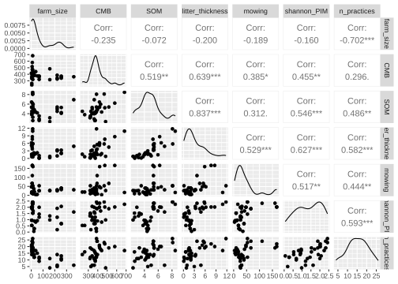
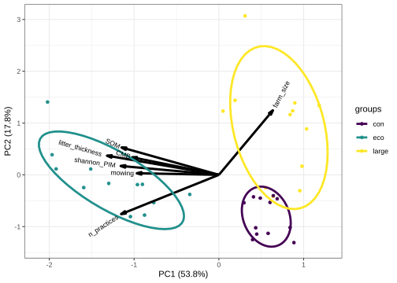

![]()
Show me the code
install.packages("psych")
install.packages("ggbiplot")This tutorial will introduce you to the principles and practical application of principal component analysis (PCA) using R. The main aim of this tutorial is to help you understand how PCA can be used to reduce the dimensionality of multivariate datasets while retaining the most important patterns of variation. You will learn how to run PCA in R, and interpret key outputs such as eigenvalues, eigenvectors, loadings, scores, and explained variance.
Let’s get started!
In this tutorial, we will need to use functions in the psych and ggbiplot packages. Make sure to install these packages before starting the tutorial.
install.packages("psych")
install.packages("ggbiplot")To work on this tutorial, you will need to load the readxl, tidyverse, GGally, psych, ggbiplot, and viridis packages.
library(readxl)
library(tidyverse)
library(GGally)
library(psych)
library(ggbiplot)
library(viridis)Start by importing the data used in this course (see previous tutorials).
#Option 1 (csv file)
data <- read_csv("gss_statistics_master_data_set2.csv")
#Option 2 (Excel file)
data <- read_excel("gss_statistics_master_data_set2.xlsx")In this tutorial, we will apply principal component analysis (PCA) to a simplified dataset containing seven variables: farm size (farm_size), soil microbial biomass (CMB), soil organic matter content (SOM), litter thickness (litter_thickness), mowing intensity (mowing), plant diversity (shannon_PIM), and the number of agroecological practices (n_practices). These variables capture different aspects of farm management, soil properties, and biodiversity, and are likely to be interrelated. Instead of examining each pair of variables separately (e.g., using a correlation plot), PCA summarizes the correlation structure among all seven variables into a smaller number of principal components. By applying PCA to this dataset in R, we can visualize how farms differ from one another based on these combined characteristics and identify which variables contribute most strongly to differences among farms.
Create a new dataset object (data_pca) that only contains the following variables: farm size (farm_size) soil microbial biomass (CMB), soil organic matter content (SOM), litter thickness (litter_thickness), mowing intensity (mowing), plant diversity (shannon_PIM), and the number of agroecological practices (n_practices).
data_pca <- dplyr::select(data,
farm_size,
CMB,
SOM,
litter_thickness,
mowing,
shannon_PIM,
n_practices)Principal component analysis (PCA) is a statistical technique used to summarize patterns in multivariate data by transforming a set of possibly correlated variables into a smaller number of new variables called principal components. Each principal component is a linear combination of the original variables and is constructed in such a way that it captures as much variation in the data as possible. The first principal component represents the direction of greatest variation in the dataset, the second captures the next highest amount of variation while being orthogonal (independent) to the first, and so on.
PCA is particularly useful when variables are correlated. When several variables are strongly correlated, they often measure similar underlying processes, and PCA combines this shared information into principal components. This is why PCA is closely related to the concept of correlation: it is effectively based on the covariance or correlation matrix of the data, identifying directions in which variables co-vary. When variables are standardized, PCA is based on the correlation matrix, ensuring that all variables contribute equally regardless of their original scale.
To run a PCA in R, the data should consist of continuous numerical variables measured across a set of observations, such as samples, sites, or individuals. The method assumes linear relationships among variables and works best when variables show some degree of correlation. Before performing PCA, it is usually necessary to handle missing values and to standardize variables, especially when they are measured on different scales.
We will first start by creating multiple scatter plots to visualize the strength of association between the seven variables included in our dataset. It is always a good idea to visualize and explore the data before conducting any analysis.
ggpairs() to visualize pairwise relationships and the strength of association between farm size (farm_size), soil microbial biomass (CMB), soil organic matter content (SOM), litter thickness (litter_thickness), mowing intensity (mowing), plant diversity (shannon_PIM), and the number of agroecological practices (n_practices).ggpairs(data_pca)
Some variables show a strong correlation with one another. For example, there is a strong positive relationship between litter thickness and soil organic matter content. There is also a strong negative relationship between farm size and the number of agroecological practices implemented on the farm.
Some variables, on the other hand, appear to be very weakly correlated with one another. For example, farm size and soil organic matter content appear to be independent of one another.
Before running a PCA, it is good practice to check whether your data are suitable for this type of analysis. Two commonly used tests for this purpose are the Kaiser-Meyer-Olkin (KMO) measure of sampling adequacy and Bartlett’s test of sphericity.
The KMO value assesses whether the variables share enough common variance to justify a dimensionality reduction technique like PCA. It compares the strength of observed correlations to the strength of partial correlations. If variables are strongly correlated with each other but not explained well by other variables (low partial correlations), PCA is likely to work well. KMO values range from 0 to 1, where values above 0.6 are generally considered acceptable, above 0.7/0.8 good, and above 0.9 very good. Low KMO values suggest that PCA may not be appropriate.
In R, you can calculate a KMO value using the KMO() function in the psych package. The only input needed for this function is a data table (such as data_pca) or a correlation matrix. It outputs an overall measure of sampling adequacy (MSA).
Bartlett’s test of sphericity evaluates whether the correlation matrix differs significantly from an identity matrix (a matrix with zeros off the diagonal and ones on the diagonal). In an identity matrix, variables are uncorrelated, which would make PCA uninformative. A significant result (typically p-value < 0.05) indicates that there are sufficient correlations among variables to proceed with PCA.
In R, you can perform Bartlett’s test of sphericity using cortest.bartlett() in the psych package. The only input needed is a correlation matrix or dataset.
KMO() to calculate the KMO value of our PCA dataset (data_pca)cortest.bartlett() to perform a Bartlett’s test of sphericityKMO(data_pca)Kaiser-Meyer-Olkin factor adequacy
Call: KMO(r = data_pca)
Overall MSA = 0.65
MSA for each item =
farm_size CMB SOM litter_thickness
0.37 0.65 0.70 0.74
mowing shannon_PIM n_practices
0.78 0.75 0.58 cortest.bartlett(data_pca)$chisq
[1] 145.8043
$p.value
[1] 1.097331e-20
$df
[1] 21The KMO value is 0.65, which is considered acceptable. In addition, the Bartlett’s test of sphericity is highly significant (p-value < 0.001), which means that we reject the null hypothesis that the correlation matrix calculated from the data is not different from the identity matrix. Therefore, our data seem to be suitable for a dimensionality reduction techniques such as PCA.
In R, you can do a principal component analysis using the prcomp() function in the stats package. We will use three main arguments in this function:
x: a data frame that only contains the variables to be included in the PCA (in our case: data_pca)
center: a logical value indicating if variables should be zero centered (by subtracting the variable mean) before the PCA. TRUE is yes (default), FALSE is no.
scale.: a logical value indicating if variables should be scaled to have unit variance before the PCA. TRUE is yes, FALSE is no (default).
Before performing a PCA, it is usually important to center and scale the variables so that they are comparable. Centering means subtracting the mean from each variable, so that all variables have a mean of zero. Without centering, variables with larger means could disproportionately affect the orientation of the principal components. Scaling goes one step further by dividing each variable by its standard deviation, so that all variables have a variance of one. This is particularly important when variables are measured on different scales or in different units, as is often the case in sustainability research. If the data are not scaled, variables with larger numerical ranges or higher variance will dominate the PCA.
The prcomp() function will output a list with the following elements:
sdev: the standard deviations of the principal components (i.e., the square root of the eigenvalues)
rotation: a matrix of variable loadings (i.e., a matrix whose columns contain the eigenvectors)
x: the rotated data (i.e., (scaled) original data multiplied by the rotation matrix)
center: the centering used
scale: the scaling used
Use prcomp() to do a principal component analysis on our simplified dataset (data_pca). Store the results in an object called pca. Make sure to center and scale the variables for the analysis.
pca <- prcomp(x = data_pca,
center = TRUE,
scale. = TRUE)Eigenvalues quantify how much variation in the dataset is explained by each principal component. Each principal component represents a new axis in the data, and its eigenvalue indicates the amount of variance captured along that axis. Components with larger eigenvalues explain more of the total variation.
Principal components are ordered according to the amount of variation they explain in the data. The first principal component captures the greatest possible variance, the second captures the largest share of the remaining variance while being independent of the first, and each subsequent component explains progressively less.
Because the variables were scaled prior to the PCA, each variable has a variance of 1. With seven variables in the dataset, this means that the total variance is equal to 7. Consequently, the sum of all eigenvalues is also 7. This is useful because it allows us to directly calculate the proportion of total variance explained by each principal component, by expressing each eigenvalue as a fraction of this total.
In R, when using the prcomp() function, eigenvalues are not stored explicitly but can be easily obtained from the output. The list returned by prcomp() contains a component called sdev, which represents the standard deviation of each principal component. The eigenvalues are simply the squared values of these standard deviations. These values can then be used to determine how much variance each principal component explains and to decide how many components to retain for interpretation.
When PCA is performed on standardized data (centered and scaled data), each original variable has a variance of 1. The Kaiser criterion suggests retaining only those principal components with eigenvalues greater than 1. Components with eigenvalues below 1 explain less variance than a single original variable and are typically considered uninformative.
pca object created in exercise 4. Do these calculations manually and in R.(eigenvalues <- pca$sdev^2)[1] 3.76817072 1.24673154 0.73264379 0.62435424 0.41208791 0.11738216 0.09862964#Calculate total variance (should obtain 7)
total_var <- sum(eigenvalues)
#Calculate the proportion (%) of variance explained by each principal component
prop_var <- 100*eigenvalues/total_varThe first and second principal components explain 53.8% and 17.8% in the data, respectively.
n_pc <- length(eigenvalues[eigenvalues>1])Only 2 principal components have an eigenvalue greater than 1. According to the Kaiser criterion, we should retain the first and second principal components for interpretation.
Eigenvectors define the directions of the principal components in the multidimensional space of the original variables. Each eigenvector is a set of coefficients that determines how the original variables are combined to form a principal component. In other words, they specify the orientation of the new axes onto which the data are projected.
An eigenvector consists of as many elements as variables in the data used to perform the PCA. In this tutorial, we work with a simplified dataset containing 7 variables. Consequently, each eigenvector (one per principal component) contains 7 values (one for each variable). Another important mathematical property of eigenvectors is that their length in the multidimensional space of the original variables is equal to 1 (i.e., an eigenvector has unit length).
Consider an eigenvector of \(n\) elements \((l_1,l_2,...,l_n)\), then the length of this vector satisfies \(\sqrt{\sum_{i=1}^nl_i^2}=1\).
Loadings are closely related to eigenvectors and represent the contribution of each variable to a given principal component. The loading matrix (rotation in pca) contains the coefficients that define each principal component as a linear combination of the original variables. These coefficients are not always easy to interpret in terms of variable importance, because their magnitude is constrained (each eigenvector has length 1).
When the loading matrix is normed by the square root of the eigenvalues, each column (eigenvector) is multiplied by the square root of the corresponding eigenvalue. When variables are standardized, they can be interpreted as the correlation between the original variables and the principal components.
rotation element in pca)t(), (2) multiply this transposed matrix by the square root of eigenvalues, and (3) transpose the resulting matrix using t().pca$rotation PC1 PC2 PC3 PC4 PC5
farm_size 0.2237310 0.7598019 -0.21679336 -0.21583705 0.03300059
CMB -0.3588386 0.2066099 0.26776529 0.76421870 0.29483037
SOM -0.4027627 0.3223965 0.39266387 -0.31580200 -0.30716815
litter_thickness -0.4630595 0.2256512 0.16135203 -0.05768053 -0.29518994
mowing -0.3398466 0.0186066 -0.78489267 0.25805453 -0.40272969
shannon_PIM -0.4064985 0.1042726 -0.29099143 -0.31081571 0.75363309
n_practices -0.4047230 -0.4625327 0.01872102 -0.32113494 -0.01850955
PC6 PC7
farm_size -0.11788325 0.51388235
CMB 0.07571867 0.28312624
SOM 0.61142410 -0.10832905
litter_thickness -0.74841043 -0.24091627
mowing 0.19576715 -0.03151868
shannon_PIM 0.03417357 -0.27105931
n_practices -0.08318660 0.71520770length_eigenvector <- sqrt(sum(pca$rotation[,1]^2))The length of the eigenvector for the first principal component is 1.
t(t(pca$rotation) * sqrt(eigenvalues)) PC1 PC2 PC3 PC4 PC5
farm_size 0.4343017 0.84837297 -0.18556344 -0.1705460 0.02118442
CMB -0.6965695 0.23069470 0.22919267 0.6038557 0.18926363
SOM -0.7818340 0.35997867 0.33609912 -0.2495344 -0.19718375
litter_thickness -0.8988807 0.25195572 0.13810864 -0.0455769 -0.18949445
mowing -0.6597027 0.02077559 -0.67182585 0.2039046 -0.25852859
shannon_PIM -0.7890857 0.11642779 -0.24907299 -0.2455944 0.48378778
n_practices -0.7856392 -0.51645079 0.01602418 -0.2537483 -0.01188204
PC6 PC7
farm_size -0.04038807 0.161386584
CMB 0.02594204 0.088916806
SOM 0.20948050 -0.034021125
litter_thickness -0.25641349 -0.075660615
mowing 0.06707194 -0.009898554
shannon_PIM 0.01170823 -0.085127143
n_practices -0.02850063 0.224613530For PC1: this principal component has a strong negative relationship with all variables in the dataset, expect for farm size. The strongest negative relationship is with litter thickness. This means that, on average, farms with high positive values on the first principal component are associated with a low soil litter thickness, but also a low soil organic matter content, a low plant diversity, and a low number of agroecological practices.
For PC2: this principal component has a strong positive relationship with farm size, meaning that farms with high values on the second principal component are on average larger. There is also a negative relationship between the second principal component and the number of agroecological practices, meaning that farms with high values on PC2 use on average a low number of agroecological practices.
Scores are the coordinates of each observation (e.g., site, sample, or individual) in the new space defined by the principal components. They tell you where each observation lies along each principal component and are therefore used to visualize patterns, groupings, or gradients in the data.
Scores are obtained by projecting the original data onto the principal component axes. Mathematically, this is done by multiplying the (centered and scaled) data matrix (scale(data_pca)) by the loading matrix (pca$rotation). Each score is thus a weighted sum of the original variables, where the weights are given by the loadings for a particular principal component.
Consider a principal component with eigenvector \((l_1,l_2,...,l_n)\), then the score for an observation \(i\) (in this tutorial, an observation is a farm) is calculated using Equation 1, where \((x_1,x_2,...,x_n)\) are the scaled values of each variable for that observation.
\[ score_i=l_1x_1+l_2x_2+...+l_nx_n \tag{1}\]
When doing a PCA using prcomp(), the scores are stored in the x element of the pca object.
x element in pca)pca$rotation), write down the equation needed to calculate the score of each farm on the first and second principal components.pca$x PC1 PC2 PC3 PC4 PC5 PC6
[1,] 1.87919527 -0.3469193 -0.433712819 0.69042682 0.69696461 -0.104144912
[2,] 0.09651907 1.3942997 -0.173948894 -0.75380272 0.59301952 0.011328412
[3,] -1.51246187 -0.6083250 0.157673586 -0.35736200 0.35732170 -0.207738499
[4,] -2.05348499 -0.9132625 -1.295943139 -0.48754407 0.17480850 0.375348122
[5,] 0.37506246 1.6289371 -0.530122411 -1.22603378 0.62161631 -0.058723151
[6,] 0.60767018 3.4760329 0.003294355 -1.03301274 -0.20191313 0.183676267
[7,] -1.89173380 -0.2138903 0.495079876 -0.54323895 0.03937880 -0.006143510
[8,] -3.87356377 0.4387113 -1.115886041 1.66387522 -0.68045960 -0.035816205
[9,] 1.08540429 -0.2813576 -0.658885298 0.03045247 1.33638663 -0.237209141
[10,] -1.72615931 -0.8800719 -0.225286625 -0.59228396 -0.06031493 -0.299915002
[11,] 0.78369049 -1.4174134 -0.032274453 -0.66685902 0.66911637 -0.405255351
[12,] 1.25890341 -0.4688633 -0.955137888 -0.10201660 0.30705667 0.310097415
[13,] 1.35442307 -0.5234796 0.717843506 0.65355665 -0.76653378 0.091506287
[14,] -2.97643446 0.1271464 0.783059037 -0.76224236 0.31194930 0.824820532
[15,] 1.74307577 -1.4822082 0.112612475 -0.63240256 -0.69401056 0.041864595
[16,] 1.65276429 -1.1529519 0.261303177 -0.91786541 -1.02127183 0.076397832
[17,] 1.71294060 1.3991569 -0.398201764 0.17280185 -0.44295678 -0.189683937
[18,] 1.65369030 1.3173297 -0.395905223 -0.02561859 -0.51841103 -0.156865061
[19,] -2.55830277 -0.1872188 -2.018120400 0.26986252 -0.41551617 0.195753888
[20,] 1.76270625 1.5719672 -0.285070078 -0.25324898 0.01882956 0.491223605
[21,] 0.85552059 -1.1579800 0.457459027 -0.03865289 0.03102264 -0.023369654
[22,] 0.87932069 -1.2963105 0.388942242 -0.30131674 -0.05142948 -0.058598298
[23,] -3.97881571 1.5919312 2.602750871 1.25725819 0.66997136 -0.220475868
[24,] 2.32847785 1.5173859 0.149058614 0.14073171 -1.14948945 -0.290382477
[25,] 1.93138244 0.1881189 -0.709413944 -0.29512466 0.48241423 -0.114181192
[26,] 2.03580487 1.0038887 -0.243834559 1.94453179 0.87129562 -0.326327227
[27,] -1.77507419 -0.2086044 0.134250934 0.84882835 0.48196074 0.186602538
[28,] 0.96157781 -0.5086176 0.644826096 0.02189099 0.03368551 -0.185985674
[29,] -3.13878951 -0.2782730 -1.762437393 0.79291606 -0.76521223 -0.303271496
[30,] 0.80385890 -0.4812283 0.866425555 0.23139826 -0.01356012 0.344500348
[31,] -0.67647122 -0.4279988 0.339452335 -0.04699343 0.40635474 1.004450838
[32,] 0.58315059 -0.6110863 1.008159477 0.55256011 0.15183871 0.003717267
[33,] 1.18779776 -0.6028448 0.590110517 0.80916863 -1.17795999 0.076193648
[34,] 1.14350338 -1.2797164 -0.129309304 0.11762684 1.09655655 -0.351498078
[35,] 1.26444537 -0.4556155 0.801330677 0.63694942 -0.80582564 0.203901364
[36,] -3.77959410 0.1293316 0.849857875 -1.79921644 -0.58668339 -0.845798225
PC7
[1,] -0.39246729
[2,] 0.33288868
[3,] 0.01866939
[4,] 0.30956357
[5,] 0.18161197
[6,] -0.16628347
[7,] -0.26846245
[8,] 0.04320317
[9,] -0.58758664
[10,] 0.35657598
[11,] 0.14483219
[12,] -0.37485404
[13,] -0.11386313
[14,] 0.08767264
[15,] -0.07732998
[16,] -0.55306462
[17,] 0.62038187
[18,] 0.69716749
[19,] -0.43634897
[20,] -0.34489671
[21,] 0.14937077
[22,] 0.20152368
[23,] -0.28856165
[24,] -0.26616445
[25,] 0.04209672
[26,] -0.14606380
[27,] 0.21881910
[28,] 0.13172942
[29,] 0.08891268
[30,] -0.04158004
[31,] 0.13365709
[32,] 0.60624620
[33,] 0.05182745
[34,] 0.05802669
[35,] -0.11847762
[36,] -0.29877186For the first principal component (PC1):
\[ \begin{split} score_{PC1}&=0.22x_{farmsize}-0.36x_{CMB}-0.40x_{SOM}-0.46x_{litterthickness}\\ &-0.34x_{mowing}-0.41x_{shannon}-0.40x_{npractices} \end{split} \tag{2}\]
For the second principal component (PC2):
\[ \begin{split} score_{PC2}&=0.76x_{farmsize}+0.21x_{CMB}+0.32x_{SOM}+0.23x_{litterthickness} \\ &+0.02x_{mowing}+0.10x_{shannon}-0.46x_{npractices} \end{split} \tag{3}\]
For the first observation (or farm) in the dataset, the scaled value of each variable is:
round(scale(data_pca)[1,], 2) farm_size CMB SOM litter_thickness
-0.06 -0.25 -1.49 -1.09
mowing shannon_PIM n_practices
-0.42 -0.26 -1.11 We can now use Equation 2 and Equation 3 to calculate the score of that farm on each principal component.
On the first principal component:
\[ \begin{split} score_{PC1}&=0.22\times(-0.06)-0.36\times(-0.25)-0.40\times(-1.49)-0.46\times(-1.09)\\ &-0.34\times(-0.42)-0.41\times(-0.26)-0.40\times(-1.11) \end{split} \]
\[ score_{PC1}=1.87 \]
On the second principal component:
\[ \begin{split} score_{PC2}&=0.76\times(-0.06)+0.21\times(-0.25)+0.32\times(-1.49)+0.23\times(-1.09) \\ &+0.02\times(-0.42)+0.10\times(-0.26)-0.46\times(-1.11) \end{split} \]
\[ score_{PC2}=-0.35 \]
If we do these calculations in R:
#For the first principal component
score_pc1 <- sum(pca$rotation[,1]*scale(data_pca)[1,])
#For the second principal component
score_pc2 <- sum(pca$rotation[,2]*scale(data_pca)[1,])The score value of the first observation on PC1 is 1.88.
The score value of the first observation on PC2 is -0.35.
Note: differences in decimal values are only due to rounding in manual calculations.
To visualize the results of a PCA performed with prcomp() in R, a convenient option is to use the ggbiplot package. A biplot displays both the scores of the observations (as points) and the loadings of the variables (as arrows) in the space of the first two principal components (PC1 on the x-axis and PC2 on the y-axis).
A PCA biplot can be created using ggbiplot(). This function takes a number of arguments (see associated help page for complete information). We will focus on the following arguments for now:
pcobj: an object returned by prcomp() (in our case: pca)
choices: a vector of two integers stating which principal components to plot. Default to 1:2.
groups: an optional factor variable indicating the groups that the observations belong to (e.g., farm type).
ellipse: a logical variable. If TRUE, the function will add an ellipse around each group.
ellipse.fill: a logical variable. If FALSE, ellipses are not filled with a colour.
data, not data_pca). The groups argument of ggbiplot() will be useful here.ggbiplot(pca,
choices = 1:2,
groups = data$farm_type,
ellipse = TRUE,
ellipse.fill = FALSE)+
theme_bw()+
scale_colour_viridis(discrete = TRUE)+ #Use viridis colour palette
xlab("PC1 (53.8%)")+
ylab("PC2 (17.8%)")+
coord_cartesian() #To improve visual (do not force x and y axes to have the same scale)
Along the first principal component (PC1), there is a clear separation between ecological farms and the other farm types. Ecological farms are associated with higher values of litter thickness, soil organic matter, soil microbial biomass, plant diversity, and the number of agroecological practices, indicating a gradient that reflects overall ecological management intensity.
The second principal component (PC2) primarily differentiates between conventional and large-scale farms, with farm size contributing strongly to this axis. In addition, conventional farms tend to have a higher number of agroecological practices compared to large-scale farms, suggesting a secondary gradient related to management intensity within non-ecological systems.